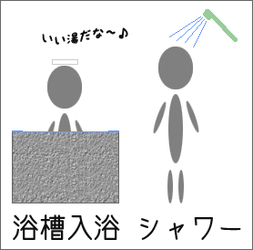
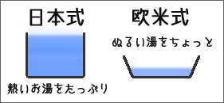
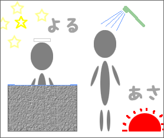

日本人の入浴の習慣
日本と台湾の入浴の習慣

台湾では、シャワーだけで入浴することが多いです。アパートや寮、ホテルでもバスタブがない浴室が珍しくありません。同じく、欧米人もシャワーだけを使って、バスタブは使わないことが多いといわれます。
一方、日本人は、湯船に入る（浴槽に浸かる）浴槽入浴を好みます。また、日本人は高い温度のお湯に浸かることを好むといわれます。欧米人がバスタブを使うときの温度は、高くても体温と同じくらい（36〜37℃）ですが、日本人が入るお風呂では40〜42℃くらいが適温なのです。ただ、最近は温めの温度（38℃くらい）を好む人も増えているようです。

また、日本の浴槽は、欧米のバスタブよりも深くなっているものが多いですが、これは全身浴（お湯に肩まで浸かる）をする日本人の習慣にあわせたものです。
日本人の入浴の習慣の変化
毎日浴槽入浴をするという日本人の習慣は、世界的に見ても珍しいといわれてきました。しかし、最近は、日本人の入浴の習慣も変化しているようです。
入浴回数
では、日本人は、実際にどのくらいお風呂に入っているのでしょうか。
日本人の平均的な入浴回数は、浴槽入浴とシャワーだけの入浴をあわせて、１日に1.1〜1.4回くらいです。データの上では、みんな毎日必ずお風呂に入っていることになります。
浴槽入浴とシャワーだけの入浴
シャワーの普及や若者の生活習慣の欧米化によって、シャワーだけの入浴をする人も増えています。
浴槽入浴とシャワーだけの入浴
| 出典：東京ガス都市生活研究所・風呂文化研究所（2000）「現代人の入浴事情2000：夏の入浴実態調査」. |
| 一年中いつも浴槽入浴をする | 12% | |
| 一年中ほとんど浴槽入浴をする | 35% | |
| 夏はシャワーだけの入浴しかしないことが多い | 43% | |
| 一年中ほぼシャワーだけの入浴しかしない | 4% | |
| 一年中いつもシャワーだけの入浴しかしない | 1% | |
夏場はシャワーだけの入浴をして、冬場は浴槽入浴をするという入浴方法が一般的になってきているようです。これは、《冬は寒く・夏は暑い》という日本の気候にあっているからでしょう。【参考→気温】
実際には、浴槽入浴とシャワーだけの入浴では、入浴の目的が違うという面もあります。浴槽入浴をする目的は、
- 身体を温める
- リラックスする
- 疲れをとる
- 肩こりや手足のむくみをとる
- 身体の汚れを落とす
などです。一方、シャワーだけの入浴をする目的は、
- 時間をかけない
- 汗を流す
- 目を覚ます
などです。そのため、冬は身体を温めるために浴槽入浴をしますが、夏は時間がかからないシャワーだけの入浴で済ますという人が多くなっているのです。
また、年齢が低いほど、同居家族の人数が少ないほど「シャワーだけの入浴」をする人の割合が高くなります。
家族同居と一人暮らし
夜に浴槽の湯を沸かして、家族が間を置かずに順番に入浴するというのが、日本の家族の伝統的な入浴の方法です。
沸かしたてのお風呂（に入いること）は「一番風呂」とよばれ、以前は家族の主（たとえば父親）の特権でした。また、子供が子供同士で、または、親と一緒に入浴することでお風呂は家族のコミュニケーションの場という役割も果たしていました。
現在でも、約半数の家庭では、家族が間を置かずに順番に入浴する方法をとっているようです。 しかし、それぞれの生活時間の違いなどから、家族がバラバラに入浴するという家庭も約半数に上ります。
一方、一人暮らしをしている人の約３分の１は、一年中シャワーだけの入浴をしています。そのうち、20代以下の一人暮らしでは、約半分の人が浴槽入浴をしていません。シャワーだけの入浴をする主な理由は、入浴の時間や手間を省くこと、水道・光熱費を節約することです。また、若い世代の一人暮らしでは、追い炊き機能（浴槽内の水やお湯を後から温めることのできる機能）のない浴槽設備を使用している場合が多いことも、シャワーだけの入浴をする理由の一つになっているようです。
また、一人暮らしをしている人では、平日は時間がかからないシャワーだけの入浴をし、休日にはリラックスしたり、疲れをとったりするために浴槽入浴をするという人も多いようです。
入浴時間
日本人の平均的な入浴時間は次のようになっています。
日本人の平均的な入浴時間
| 夏期 | 冬期 |
| 女性 | 男性 | 全体 | 女性 | 男性 | 全体 |
| 出典：東京ガス都市生活研究所・風呂文化研究所（2000）「現代人の入浴事情2000：夏の入浴実態調査」. |
| 浴槽入浴をする場合 | 浴室内にいる時間 | 23分 | 20分 | 21分 | 28分 | 25分 | 26分 |
| シャワー使用時間 | 6分 | 5分 | 6分 | 7分 | 6分 | 7分 |
| 蛇口使用時間 | 3分 | 3分 | 3分 | --- | --- | --- |
| 浴槽に浸かる時間 | 8分 | 7分 | 7分 | --- | --- | 11分 |
| シャワーのみの場合 | 浴室内にいる時間 | 13分 | 12分 | 13分 | 16分 | 13分 | 15分 |
| シャワー使用時間 | 8分 | 8分 | 8分 | 10分 | 9分 | 10分 |
| 蛇口使用時間 | 2分 | 2分 | 2分 | --- | --- | --- |
| 浴槽に浸かる時間 | 0分 | 0分 | 0分 | 0分 | 0分 | 0分 |
入浴する時間帯

日本では、夜に入浴（浴槽入浴）するというスタイルが最も一般的です。浴槽入浴をする場合、９割以上は夜に行なわれます。一方、朝にシャワーだけで入浴するというスタイルも見られます。シャワーだけで入浴する場合、約３割は朝に行なわれています。しかし、朝にシャワーだけで入浴するスタイルを毎日の習慣としている人は、夏場でも１割程度のようです。朝にシャワーを浴びることのある人は３〜４割になりますが、朝のシャワーが日本人の生活習慣になっているとはいえません。
- 参考文献・資料
-